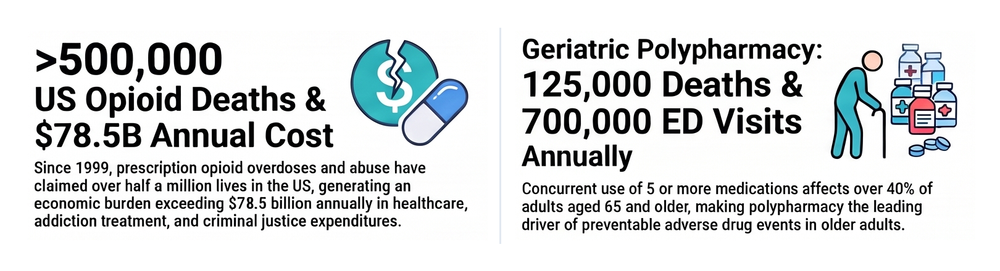
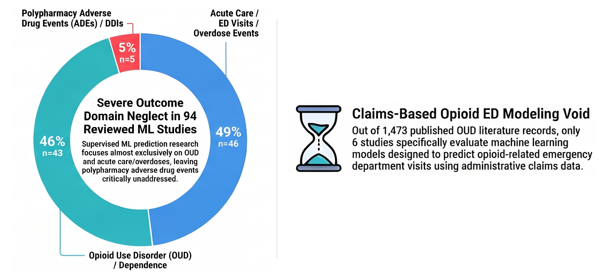
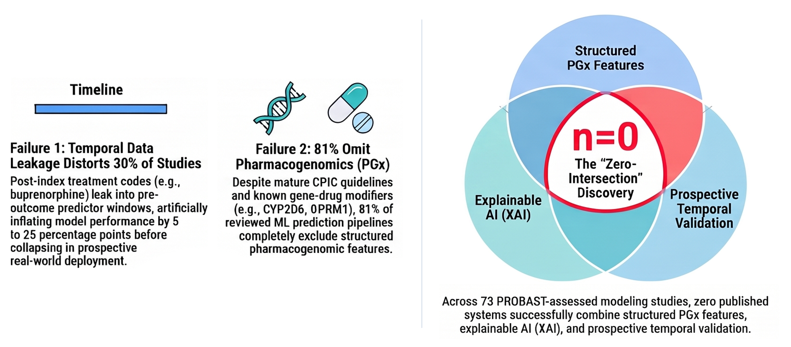
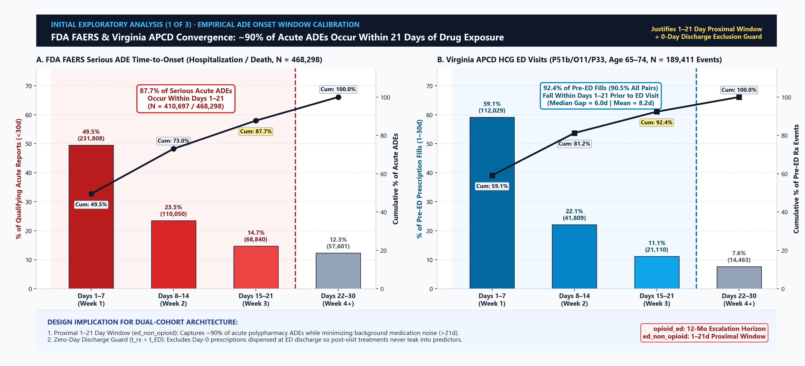
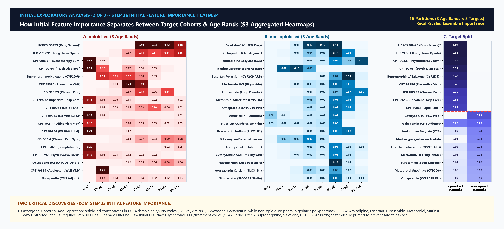
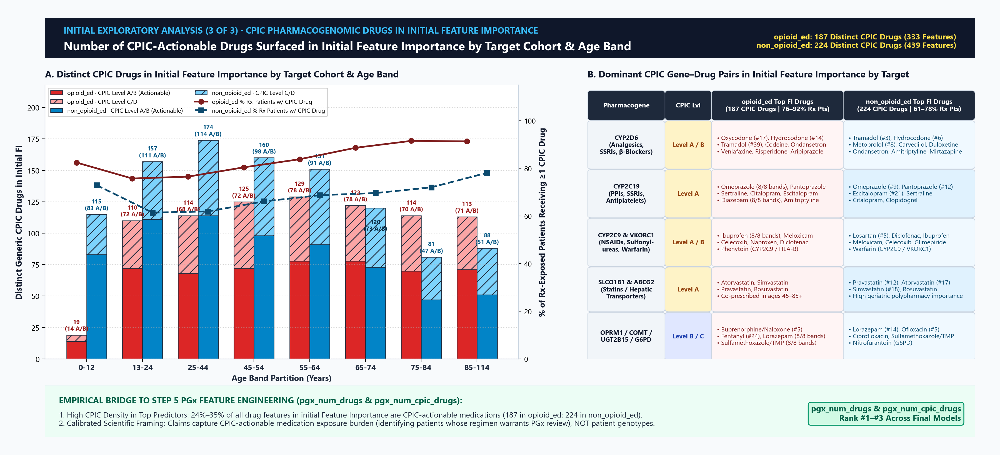
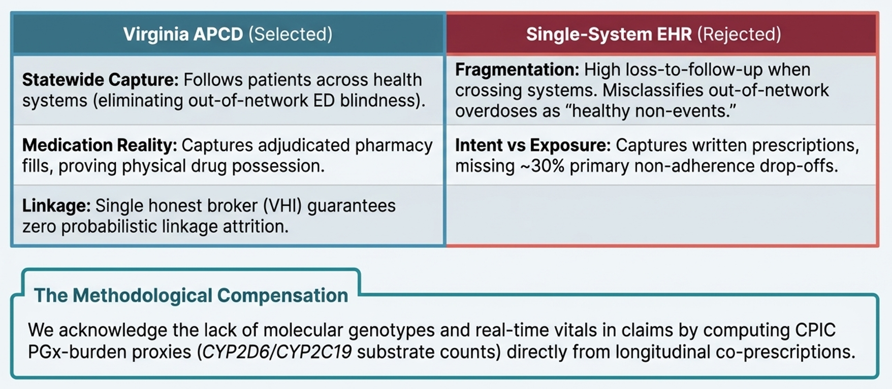
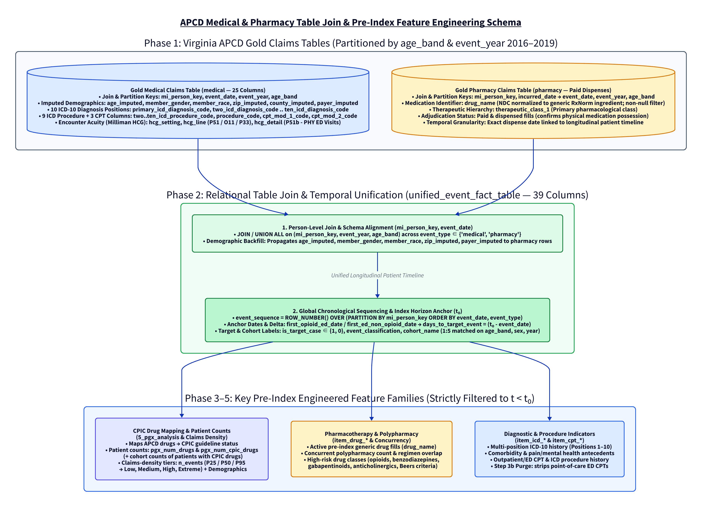
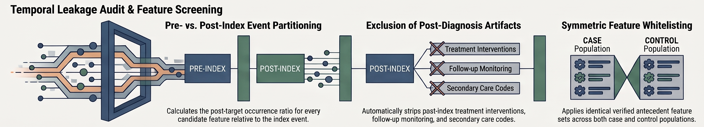

For Opioid and Polypharmacy Emergency Department Visits in Virginia’s APCD
R. Jerome Dixon, MDA, MSc IT
Integrative Life Sciences Doctoral Program(Home Department) School of Pharmacy(Department of Pharmacotherapy & Outcomes Science · Research Lab) Virginia Commonwealth University
November 9, 2026
Supervisory Committee
Integrative Life Sciences Doctoral ProgramSchool of PharmacyDepartment of Pharmacotherapy & Outcomes Science
Committee Chair & Dissertation Sponsor
Elvin T. Price, Pharm.D., Ph.D., FAHA
Associate Professor, Department of Pharmacotherapy & Outcomes Science · VCU School of Pharmacy
Supervisory Committee Members
Franklin Bost, BPD, MBA, IDSA, FAIMBE
Professor Emeritus, Dept. of Biomedical Engineering & College of Engineering
Tamas Gal, Ph.D.
Director of Research Informatics & Core Director, Massey Comprehensive Cancer Center
Dayanjan S. Wijesinghe, Ph.D.
Associate Professor, VCU School of Pharmacy
Jonathan P. DeShazo, Ph.D.
Director of Real World Evidence Generation, CVS Health
Roadmap
Qualifying Exam Agenda5 Core Modules
I.
Problem
II.
Governance & Data
III.
Cohorts
IV.
Modeling
V.
Translation & Deployment
Downstream Clinical & Economic Effects
Module IInfographic Part 1 of 4 · Downstream Public Health & Economic Toll
⇄ Click Infographic for Bullet Points

Figure 1A (Part 1): Downstream clinical and economic effects of US opioid overdoses and geriatric polypharmacy (CDC WONDER; Florence et al., Med Care; Charlesworth et al., J Gerontol A; Budnitz/Shehab et al., JAMA). Click infographic to swap for detailed citations.
Detailed Breakdown · Downstream Clinical & Economic Effects⇄ Click to Return to Infographic
Cohort 1: The U.S. Opioid Overdose Crisis
Cumulative Mortality:>500,000 lives lost in the United States since 1999 from prescription and synthetic opioid overdoses \(^1\).
Economic Burden: Exceeds $78.5 billion annually in healthcare, addiction treatment, and criminal justice expenditures \(^2\).
Clinical Trajectory: Driven by longitudinal \(\mu\)-opioid receptor tolerance, escalating MME titration, and synergistic CNS depressants (benzodiazepines, gabapentinoids) blunting respiratory drive.
Cohort 2: Geriatric Polypharmacy & ADEs
Population Prevalence: Concurrent use of \(\ge 5\) prescription medications affects >40% of older adults aged \(\ge 65\) (\(\ge 10\) drugs in ~20%) \(^3\).
Acute Care Toll: Drives 125,000 deaths and 700,000 to 1.3 million ED visits annually (\(>\$30\text{B}\) direct hospital costs) \(^{4,5}\).
Clinical Trajectory: Driven by age-related renal/hepatic clearance decline and higher-order (\(A+B+C+D\)) multi-drug metabolic saturation.
References:1. CDC WONDER / Wilson et al. (2020) MMWR 69:290–297. · 2. Florence et al. (2016) Med Care 54(10):901–906. · 3. Charlesworth et al. (2015) J Gerontol A 70(8):989–995; Kantor et al. (2015) JAMA 314(17):1818–1831. · 4. Budnitz et al. (2006) JAMA 296(15):1858–1866; Shehab et al. (2016) JAMA 316(20):2115–2125. · 5. Lazarou et al. (1998) JAMA 279(15):1200–1205; Viswanathan et al. (2012) Ann Intern Med 157(11):785–795.
Opioid Research Overshadows Polypharmacy
Module IInfographic Part 2 of 4 · Systematic Review (n = 94 ML Studies)
⇄ Click Infographic for Bullet Points

Figure 1A (Part 2): Published outcome domain distribution across 94 supervised ML studies and the claims-based opioid ED modeling void. Click infographic to swap for detailed bullet points & PRISMA registration details.
Detailed Breakdown · Opioid Research Overshadows Polypharmacy Research (n = 94 ML Studies)⇄ Click to Return to Infographic
Severe Outcome Domain Neglect (\(n = 94\) ML Studies)
46% (\(n = 43\) Studies): Focus on Opioid Use Disorder (OUD) clinical diagnosis or dependence classification.
49% (\(n = 46\) Studies): Focus on acute care utilization (ED visits, hospital readmissions) or acute overdose events.
Only 5% (\(n = 5\) Studies): Address polypharmacy adverse drug events (ADEs) or drug–drug interactions (DDIs)—leaving geriatric multi-drug toxicity critically under-modeled.
The Claims-Based Opioid ED Void (\(n = 6 / 1,473\))
PRISMA 2020 Screening (CRD420261354089): Out of 1,473 published OUD literature records screened across biomedical databases, only 6 studies specifically evaluate supervised machine learning models designed to predict opioid-related ED visits using administrative claims data.
Literature Imbalance: 95% of published ML studies cluster in OUD diagnosis or general utilization, while polypharmacy ADEs (5%) and claims-based opioid ED prediction (6/1,473) remain largely unaddressed.
ML Gap - No PGx features. No XAI. No Target Leakage Validation.
Module IInfographic Part 3 of 4 · PROBAST Appraisal (n = 73 Models)
⇄ Click Infographic for Bullet Points

Figure 1A (Part 3): PROBAST appraisal of 73 predictive models exposing the ML gap (\(n = 0\) combining PGx features, XAI, and target leakage / temporal holdout validation). Click infographic to swap for detailed bullet points & citations.
Detailed Breakdown · ML Gap: No PGx Features, No XAI, No Target Leakage Validation (n = 73 Models)⇄ Click to Return to Infographic
Failure 1 — Temporal Data Leakage (30% of Models): Post-index treatment codes (e.g., buprenorphine, naloxone, ED toxicology screens) leak into pre-index predictor windows, artificially inflating AUROC by 5–25+ percentage points before collapsing on out-of-time holdouts.
Failure 2 — Pharmacogenomic Omission (81% of Models): Despite mature CPIC guidelines and gene–drug modifiers (CYP2D6, CYP2C19, OPRM1) \(^1\), 81% of reviewed ML pipelines completely exclude structured PGx features.
Failure 3: The “Empty Intersection” (\(n = 0 / 73\))
Zero Intersection (\(n = 0\)): Across all 73 PROBAST-assessed modeling studies, zero published systems combine:
Structured PGx Features (CPIC medication exposure burden),
Explainable AI (XAI) (convergent feature & rule attribution), and
Out-of-Time Temporal Holdout Validation (TRIPOD+AI Type 2b/3).
Reference:1. Crews et al. (2021) Clin Pharmacol Ther 110(4):888–896.
90% of ADEs Occur Within 21 Days
Module IStep 1
⇄ Click Infographic for Bullet Points

Figure 1B (Part 1): Convergent time-to-onset distribution across FDA FAERS (\(N = 468,298\), 87.7% \(\le 21\text{d}\)) and Virginia APCD HCG ED visits (\(N = 189,411\), 92.4% \(\le 21\text{d}\)). Click visual to swap for detailed bullet points.
Detailed Breakdown · Initial Analysis 1 of 3 (FAERS & APCD 21-Day Window Calibration)⇄ Click to Return to Visual
External Pharmacovigilance: FDA FAERS (\(N = 468,298\))
Serious Acute ADE Reports (HO Hospitalization / DE Death):
Deduplicated per primaryid + caseid (shortest therapy start \(\rightarrow\) ADE onset within <30d).
Days 1–7 (Week 1):49.5% (\(231,808\) reports) — immediate post-initiation peak.
Days 8–14 (Week 2):23.5% (\(110,050\) reports; cumulative 73.0%).
Days 15–21 (Week 3):14.7% (\(68,840\) reports; cumulative 87.7% \(\le 21\text{d}\)).
Days 22–29 (Week 4+): Only 12.3% (\(57,601\) reports) occur beyond Day 21.
Internal Calibration: Virginia APCD (\(N = 189,411\))
Most Recent Pre-ED Pharmacy Fill \(\rightarrow\) HCG ED Visit (P51b/O11/P33):
Days 1–7:59.1% (\(112,029\) ED events; \(64.6\%\) in filtered target cohort).
Days 8–14:22.1% (\(41,809\) ED events; cumulative 81.2%).
Days 15–21:11.1% (\(21,110\) ED events; cumulative 92.4% \(\le 21\text{d}\); 90.5% across all qualifying drug–ED pairs; median gap = 6.0d, mean = 8.2d).
Zero-Day Discharge Guard (\(t_{\text{rx}} < t_{\text{ED}}\)): Excludes 0-day discharge fills so post-visit treatments never leak into pre-index predictors.
Initial Feature Analysis
Module IStep 3a
⇄ Click Infographic for Bullet Points

Figure 1B (Part 2): Step 3a multi-model (CatBoost, XGBoost, XGBoost-RF) aggregated feature importance across all 8 age bands (0-12 to 85-114) and both targets (opioid_ed vs. non_opioid_ed). Click visual to swap for detailed bullet points.
Detailed Breakdown · Step 3a Multi-Model Aggregated Features (CatBoost + XGBoost + XGBoost-RF) Across 16 Partitions⇄ Click to Return to Visual
Tri-Model Count-Matrix Aggregation (n_models = 3): Event-level claims (drug_name, ICD, CPT) are pivoted into patient-level numeric count matrices and evaluated across CatBoost, XGBoost, and XGBoost-RF via Monte Carlo CV, aggregating Recall-scaled feature importances.
opioid_ed (Ages 13–64) vs. non_opioid_ed (Ages 65–114):opioid_ed is driven by chronic pain (G89.29, G89.4), psychiatric CPTs (90837), and CNS co-prescribing (Oxycodone, Gabapentin, Clonidine), whereas non_opioid_ed is driven by geriatric cardiometabolic, diuretic, and statin polypharmacy (Amlodipine, Losartan, Furosemide, Metoprolol, Atorvastatin, Simvastatin).
Discovery 2: Exposing Synchronous Leakage in Raw FI
Why Unfiltered Step 3a Models Look “Too Good” (\(\text{AUROC} \approx 0.99\)): Inspecting the raw Step 3a multi-model feature importance heatmap immediately revealed synchronous ED and OUD treatment codes at the top of opioid_ed (G0479 drug screen, Buprenorphine/Naloxone, H0020 methadone, CPT 99284/99285 ED evaluation).
Direct Motivation for Step 3b (BupaR Leakage Filter): Proved that administrative claims require explicit process-mining temporal sequence checks (\(t_{\text{claim}} < t_0\)) to strip post-target leakage before final modeling.
CPIC Drugs Drive Initial Feature Importance
Module IStep 5
⇄ Click Infographic for Bullet Points

Figure 1B (Part 3): Number of distinct CPIC-actionable drugs in initial Feature Importance results by target cohort (opioid_ed vs. non_opioid_ed) and age band. Click visual to swap for detailed bullet points.
Detailed Breakdown · CPIC Actionable Medications in Initial Feature Importance by Target Cohort⇄ Click to Return to Visual
High CPIC Drug Density Across Both Target Cohorts
opioid_ed (187 Distinct CPIC Drugs / 333 FI Features): Surfacing 110–129 distinct generic CPIC drugs per adult age band (68–78 CPIC Level A/B), led by CYP2D6 analgesics/psychotropics (Oxycodone, Hydrocodone, Tramadol, Venlafaxine, Risperidone), CYP2C19 SSRIs/PPIs (Sertraline, Citalopram, Omeprazole), and CYP2C9 NSAIDs (Ibuprofen, Meloxicam).
non_opioid_ed (224 Distinct CPIC Drugs / 439 FI Features): Surfacing 81–174 distinct CPIC drugs per age band (47–114 CPIC Level A/B), adding CYP2D6\(\beta\)-blockers (Metoprolol, Carvedilol), SLCO1B1 statins (Atorvastatin, Pravastatin, Simvastatin), and CYP2C9Losartan / Warfarin.
Pervasive Patient-Level Exposure (4.04M Drug Records): Across Virginia APCD, 75.7%–91.5% of prescription-exposed opioid_ed patients and 61.4%–78.1% of non_opioid_ed patients receive \(\ge 1\) CPIC-actionable drug.
Module IInfographic Part 4 of 4 · Point-of-Care Translation Gap
⇄ Click Infographic for Bullet Points
Figure 1A (Part 4): The Frontline & Predictive Clinical Bottleneck across longitudinal medication and administrative claims histories. Click infographic to swap for detailed bullet points.
Detailed Breakdown · The Predictive Clinical Bottleneck & Translational Bridge⇄ Click to Return to Infographic
Why Frontline Point-of-Care Review Stalls
Longitudinal Cognitive Overload: Clinicians and MTM pharmacists must synthesize multi-year medical and pharmacy claims across fragmented prescribers during rapid clinical encounters.
90%–95% Pairwise Alert Fatigue: Legacy EHR drug–drug interaction (\(A+B\)) pop-ups fire synchronous interrupts with 90%–95% clinician override rates while missing higher-order (\(A+B+C+D\)) regimen synergies.
Black-Box ML Rejection: Unexplained probability scores without verifiable IF–THEN clinical rules cannot support pharmacist medication review.
Our Dissertation’s Translational Bridge
Calibrated Scope & Defensible Impact: Identifies and prioritizes potentially modifiable medication-related risk factors from longitudinal claims and establishes a framework for subsequent clinical evaluation.
Develop and temporally validate CatBoost, XGBoost, and XGBoost-RF models with \(\text{SHAP} \cap \text{FFA}\) Boolean Horn rules for Cohort 2 (ed_non_opioid, 21-day lookback, ages 65–114) to identify reproducible risk predictors, candidate multi-drug interactions (IE), and consensus risk attenuation priorities (IR) on the 2019 holdout.
Aim 3 · Usable Decision-Support Tool (Ch. 5)
Translate validated Aim 1 and Aim 2 risk estimates and interpretable Boolean rules into a usable prototype decision-support tool for pharmacist-led Medication Therapy Management (MTM) review prioritization—evaluating explanation fidelity, clinical interpretability, and workflow usability rather than claiming clinical effectiveness.
Cohort 1: Opioid-Related ED Events (opioid_ed, Ages 13–64)
Claims Anchor (\(t_0\)): Direct diagnostic billing for F11.20 (opioid dependence) and T40.0X–T40.4X (opioid poisonings) scanned across all 10 claim diagnostic positions.
The “Silent ADE” Coding Reality: Fewer than 5% of drug-induced ED visits are billed with explicit poisoning codes (T36–T50). Hospitals bill the downstream clinical syndrome:
Module IIPhase 1 · Statewide Generalizability & Data Architecture

Figure 3: Data Source Architecture: Statewide capture and adjudicated dispenses in Virginia APCD overcome single-system EHR fragmentation and prescription abandonment.
Why Virginia APCD Is Selected
Statewide Capture: Follows patients across health systems, eliminating out-of-network ED blindness.
Medication Reality: Captures paid/adjudicated dispenses, proving physical drug possession.
Linkage Integrity: Single trusted data steward (VHI) guarantees 0 probabilistic linkage attrition.
The Methodological Compensation
EHR Genotype Gap: APCD lacks molecular genotypes and real-time bedside vitals.
CPIC Guideline Mapping & Drug Counts: We compensate by mapping dispensed APCD drugs to whether they carry a CPIC guideline (drug_cpic_mapping_global.csv) and counting patient-level total vs. CPIC drugs (pgx_num_drugs, pgx_num_cpic_drugs) and how many patients carry CPIC drugs.
Medical & Pharmacy Claims Schema
Module IIIStep 2
Medical & Pharmacy Relational Join (mi_person_key)
Unified Timeline (unified_event_fact_table): Linked on (mi_person_key, event_year, age_band) with demographic backfill & global event_sequence ordering.
CPIC Drug Mapping & Utilization (5_pgx_analysis): Maps APCD drugs to CPIC guideline status to count patient drugs (pgx_num_drugs, pgx_num_cpic_drugs) & patients with CPIC drugs, plus n_events density strata (P25/P50/P95).

Figure 4: Relational unification of APCD Gold medical and pharmacy claims into the 39-column unified_event_fact_table and pre-index feature matrix.
Schema Integration: Deterministic linkage on mi_person_key and global chronological sequencing (event_sequence) align diagnoses, procedures, and paid drug fills prior to \(t_0\).
Cohort 1 Pipeline: Opioid-Related ED (opioid_ed)
Module IIIStep 2
Clinical Anchor (\(t_0\))
ICD-10 F11.20 (Opioid dependence).
Acute Poisonings:T40.0X–T40.4X.
Scanned across all 10 claim positions.
Step 3b Leakage Purge
Partitions candidate events around \(t_0\) (\(t < t_0\) vs. \(t \ge t_0\)).
Shift immunity on high-cardinality NDC and ICD-10 diagnostic codes.
XGBoost (Asymmetric)
Depth-wise gradient-boosted decision trees.
Second-order Hessian loss uncovers complex multi-drug interaction branches.
XGBoost-RF (Bagged)
Bagged random forest mode with parallel trees.
Minimizes prediction variance and stabilizes risk across low-density strata.
Step 6 Selection Protocol: Within each cohort, age band, and 4-tier density bin, 25-split MC-CV ranks CatBoost, XGBoost, XGBoost-RF, and Ensemble by mean PR-AUC (primary) and Recall at 0.5 (tiebreaker) to determine the top-performing model for risk scoring and select the winning XGBoost variant plus CatBoost for Step 7 consensus attribution.
Dual-Model TreeSHAP Gate: Computes exact TreeSHAP on best CatBoost and best XGBoost variant (xgb vs. xgb_rf), enforcing strict feature intersection (CatBoost\(\cap\)Best XGBoost) and normalized mean score.
CNF Compilation: Explodes root-to-leaf paths of best_xgb_variant into Conjunctive Normal Form (CNF) clauses (_explode_tree_to_dataframe).
SHAP-Prioritized Rule Extraction: Rather than extracting all rules from all trees across all models, filters matched CNF rules from best_xgb_variant by instance \(|\text{SHAP}|\) attribution and active feature coverage \(\rightarrow\) PySAT Hitman minimal Abductive Explanations (AXPs; \(\text{support} \ge 0.05, \text{confidence} \ge 0.70\)).
Combined Synthesis: Ranks drivers via \(0.5 \cdot \text{SHAP}_{\text{norm}} + 0.5 \cdot \text{FFA}_{\text{norm}}\) and top-\(K\) intersection (shap_top\(\cap\)ffa_top).
Target Leakage
Module IVStep 3b

Figure 7: Step 3b Temporal Event-Partitioning Protocol: Pre- vs. post-index (\(t < t_0\) vs. \(t \ge t_0\)) event timing audit, removal of post-event clinical interventions, and symmetric antecedent whitelist locking. Click image to expand full diagram.
Clinical Rationale (Ochalek, Gal et al., 2023)
Post-Overdose Clinical Workflow: As established in Dr. Gal’s VCU ED research (Ochalek, Gal et al., 2023, DADR), rescue agents and MAT induction (e.g., buprenorphine, naloxone) are initiated as a clinical consequence following an acute overdose.
The Reverse-Causality Trap (30% of Literature): Unmonitored gain rankings (Step 3a) capture post-event stabilization and confirmatory toxicology orders occurring at \(t \ge t_0\).
Step 3b Symmetric Antecedent Whitelist
Temporal Event Partitioning (bupaR Audit): Partitions every candidate feature’s timestamps relative to \(t_0\) (\(t < t_0\) pre-index vs. \(t \ge t_0\) post-index).
Automated Post-Target Purge: Strips candidate codes with \(\tau_{\text{post}} \ge 0.80\) (post_target_ratio >= 0.80; post-event MAT induction, ED tox screens, follow-up billing).
Immutable Whitelist (safe_feature_filter.json): Locks verified pre-index antecedents symmetrically across cases & controls (empirical catalogs reserved for Nov 23 Defense).
Interactive “What-If” Scenario Exploration: Displays model-predicted risk shifts when regimen features are toggled while preserving 100% clinician authority.
Chapter 1 (Clinical Foundation & Literature Appraisal): Explainable AI & PGx in High-Risk Prescribing: A Systematic Review Status:Invited Review · J Pers Med (MDPI) Contribution: Systematic review of 94 ML studies; establishes “The Empty Intersection” (0/73 PROBAST models).
Chapter 2 (Scalable Data Architecture & Governance): A Scalable Big-Data Claims Processing Architecture and Governance Lifecycle Status:With Editor for Review · J Big Data (Springer) Contribution: Three-tier governance (CRISP-DM, TRIPOD+AI, Clinical OODA Loop) and DuckDB EC2 claims pipeline (15.1× speedup).
Chapter 6 (Translational Synthesis & Dissertation Build): Translational Synthesis, Methodological Defenses, and Clinical Horizons Status:Complete Draft for Committee Review Contribution: Comprehensive synthesis of Chapters 1–5, formal methodological defenses, and prospective clinical validation roadmaps.
Dissertation Status:3 Published Papers (Clinical and Translational Science) • 1 Under Review (Journal of Big Data) • 1 Invited Review (Journal of Personalized Medicine) • Full Manuscript Drafted across all 6 chapters for Qualifying Exam and Final Defense.
Translates validated model findings into an interpretable prototype tool evaluating explanation fidelity; prospective clinical trials are out of scope. App. A7 ↗
Consensus Risk Attribution, Not Causation
Observational claims and SHAP ∩ FFA Consensus Attribution quantify reproducible consensus risk associations rather than causal treatment effects.
Independent 2019 Temporal Holdout Validation
Evaluates out-of-time model transportability (2016–2018 train → 2019 calendar holdout) under secular prescribing shifts with zero recalibration.
Claims CPIC Exposure, Not Germline Genotypes
Administrative claims quantify CPIC-actionable medication exposure burden (pgx_num_drugs, pgx_num_cpic_drugs) rather than inferred patient genotypes.
Methodological Integrity: Eight safeguards unite clinical governance with epidemiological rigor. Crucially, FDA FAERS kinetic convergence (>90% ADEs within 21 days) provides external validation for our ed_non_opioid cohort logic, while strict controls eliminate target leakage.
Rather than brute-forcing \(>10,000\) matched tree rules per patient, prioritizes top SHAP-supported matched rules (with stratified rare-population coverage safeguards) into the PySAT Hitman minimal hitting-set solver to extract minimal Abductive Explanations (AXPs / Horn clauses) with \(\text{Supp}(R) \ge 0.05\) and \(\text{Conf}(R) \ge 0.70\).
Complexity vs. Neural Nets: Tree CNF extraction is polynomial \(\mathcal{O}(T \cdot L)\), whereas ReLU neural network minimal explanation is co-NP-complete (Katz et al., 2017).
Operational Threshold Validation Protocol (SHAP >= P75\(\cap\)Supp >= 0.05, Conf >= 0.70): Framed as a tunable precision–volume dial for clinical review capacity and validated via a 2-part sensitivity protocol: (1) Two-Gate Mirror Ablation (SHAP-only vs. FFA-only vs. SHAP ∩ FFA grid sweep testing top-\(K\) core signal retention, boundary noise filtering, and review-load compression); and (2) Utilization-Free Specification Stress Test (stripping utilization covariates/density strata to compare univariate SHAP Jaccard rank stability vs. symbolic FFA rule persistence under model perturbation).
Symmetric Pre-Index Enforcement: All retained features satisfy \(t_{\text{claim}} < t_0\) on \([t_0 - 365, t_0 - 1]\) (Opioid) or \([t_0 - 21, t_0 - 1]\) (Polypharmacy) across cases and 1:5 matched controls.
Why Unmonitored Gain Rankings Fail (Step 3a vs. Step 3b)
The Literature Failure (30% of PROBAST Models):
Unfiltered feature selection loads top tree splits onto post-overdose MAT induction and ED toxicology screens, inflating apparent discrimination by 5–20 AUROC points.
Candidacy vs. Defense Scope Demarcation:
Today (9 NOV): Lock and verify the Step 3b temporal event-partitioning methodology and antecedent whitelist.
Final Defense (23 NOV): Present complete empirical feature audit counts and 2019 holdout discrimination deltas.
Appendix A3: Step 5 CPIC Drug Mapping & Patient-Level Count Features
Specific Aim 1 · Step 5 (5_pgx_analysis)Claims Exposure vs. Genotype Defense
Global APCD Drug \(\to\) CPIC Guideline Mapping (build_global_drug_cpic_mapping.py)
Official CPIC Reference Corpus: Ingests cpic_gene-drug_pairs.xlsx / cpic_drug_list.json (573 gene–drug pairs, 300 unique drugs, 121 pharmacogenes across CPIC Levels A–D).
Automated Drug Vocabulary Matching: Extracts unique APCD drug features (DRUG:, item_drug_*) from Step 3 feature importance outputs and matches them against CPIC drug names (\(\ge 95\%\) fuzzy threshold) to build drug_cpic_mapping_global.csv (s3://pgxdatalake/gold/pgx_features/global/).
Binary Guideline Indicator: Determines whether or not each dispensed APCD generic medication has an official CPIC pharmacogenomic guideline (\(d \in \mathcal{C}_{\text{CPIC}}\)).
DuckDB Patient-Level Drug & CPIC Counts (create_pgx_features_patient_level.py)
Cohort Exposure Counts: Aggregates distinct pre-index drugs (\(D_i\)) per patient in DuckDB and records cohort-level counts of patients with any drug (pgx_num_drugs\(_i > 0\)) vs. patients carrying CPIC-guideline drugs (pgx_num_cpic_drugs\(_i > 0\)).
Claims-Derived Exposure vs. Genotype Imputation Defense
Step 5 Supervised Model Pipeline (5_pgx_analysis):
Uses observable CPIC drug counts only (pgx_num_drugs, pgx_num_cpic_drugs) merged via add_pgx_features_to_model_data.py.
Claims Boundary: Administrative claims quantify dispensed drug exposure, not molecular genotypes or germline DNA sequences.
Strict Exclusion of Race-as-Proxy Imputation:
Administrative race codes are strictly excluded as an unscientific, inaccurate proxy for genetic ancestry or metabolizer status.
Preserves methodological integrity: models test whether actionable medication burden predicts ED risk without asserting unmeasured biology.
Scope Boundary (Candidacy vs. Final Defense):
Candidate models evaluate observable claims exposure directly; interactive downstream point-of-care patient genotype and diplotype cards are staged for the November 23 Final Dissertation Defense.
Candidacy (9 NOV) vs. Final Defense (23 NOV) Scope Demarcation: Today’s examination locks the pre-specified study designs, mathematical estimators, and strict predictive-vs.-visual boundary across Specific Aims 1–3. Complete empirical 2019 holdout outcomes, feature-level IR/IE rankings, and post-execution sensitivity findings are staged for the November 23 Final Dissertation Defense.
Specific Aim 3 · Clinical Deployment & TranslationRegulatory Scope: FTC Act vs. HIPAA BAAAWS HIPAA-Eligible Enclave & Shared Responsibility
Scope Demarcation: Direct Patient vs. Hospital Deployment
Direct Patient Self-Use (FTC Consumer Scope):
Direct individual input of personal health or genetic data is governed by FTC Act Section 5 and the FTC Health Breach Notification Rule (HBNR).
HIPAA applies exclusively to covered entities and business associates; when a consumer directly uses the tool, a BAA is neither required nor legally valid.
Hospital / Healthcare Organization Use (HIPAA Scope):
Clinical deployment processing patient records constitutes ePHI under 45 CFR § 160.103.
Two-Tier Legal BAA Execution Chain:
Hospital (Covered Entity)
→ BAA #1 →
Our Legal Entity (Business Assoc.)
→ BAA #2 →
AWS Enclave (via Artifact)
Entity executes BAA with hospital; entity executes BAA with AWS via AWS Artifact.
VCU CCTR Pilot Grant Integration:
VCU Wright Center CCTR $25,000 Grant formally funds Aim 2 Compliance & Legal Review ($4,500) to partner with VCU Health Compliance and Counsel to execute institutional DUAs and BAAs prior to prospective clinical pilot testing.
AWS Technical Reality: “HIPAA-Eligible” vs. “HIPAA-Compliant”
AWS Shared Responsibility Model:
AWS services are HIPAA-eligible; application architecture must implement mandatory administrative, physical, and technical safeguards.
Mandatory Cloud Technical Configurations:
S3 Buckets: Enforce AWS KMS encryption (SSE-KMS), block all public access, enforce TLS (aws:SecureTransport) in bucket policies.
CloudWatch Log Scrubbing (Critical): Custom log sanitizers strictly prevent ePHI from leaking into log streams, stdout, or telemetry.
CloudTrail Auditing: Immutable management and data API event trails under 45 CFR § 164.312(b).
AI & External API Boundaries:
AWS-Native: Amazon Bedrock / SageMaker models hosted within VPC fall under AWS BAA.
External Third-Party APIs (OpenAI, Anthropic): Inbound/outbound calls require a separate signed BAA with each vendor, regardless of ephemeral processing.
Architectural Synthesis: Ephemeral compute with zero persistent PHI is a sound engineering safeguard, but enterprise clinical deployment legally requires the two-tier BAA chain and AWS HIPAA hardening. VCU CCTR Pilot Grant funding guarantees institutional legal review and DUA execution before prospective clinical pilot deployment.